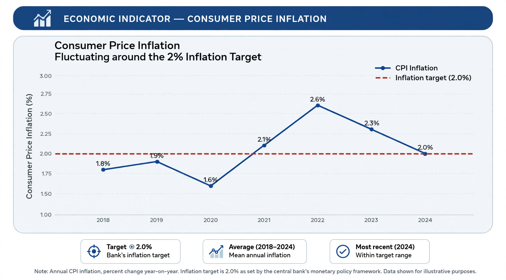

Inflation targeting is a monetary policy framework in which a central bank publicly announces a target rate of inflation — commonly around 2 per cent per year — and adjusts its policy instruments, chiefly interest rates, to steer actual inflation toward that target. The framework emphasises transparency, accountability and the anchoring of inflation expectations.
New Zealand was the first country to adopt a formal inflation target, in 1990, followed by Canada (1991) and the United Kingdom (1992). The United States Federal Reserve adopted a formal 2 per cent target in 2012. Dozens of advanced and emerging economies now use some form of inflation targeting.
The central bank forecasts inflation over a policy horizon (often two years ahead) and sets interest rates so that the forecast equals the target. Because policy affects inflation with a lag, targeting is inherently forward-looking. The bank explains its decisions in regular reports and press conferences, and may be required to write an open letter to the government explaining any large deviation from target.
Most modern practitioners follow flexible inflation targeting, in which the bank also takes account of output and employment fluctuations and returns inflation to target gradually rather than at any cost. Critics argue the framework performed poorly in anticipating the supply-shock inflation of the early 2020s, while defenders credit it with keeping long-run expectations anchored.